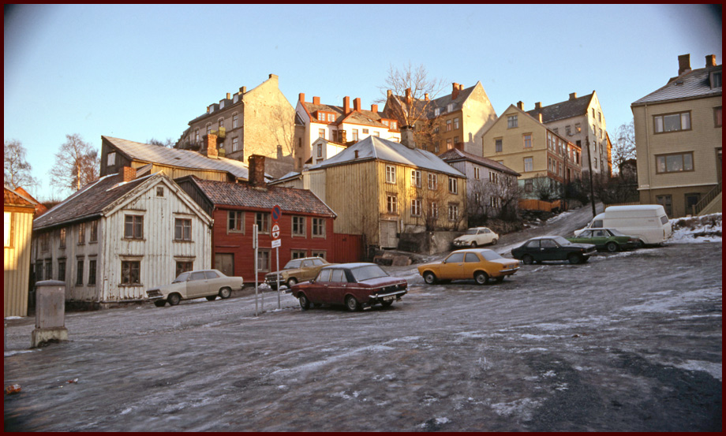
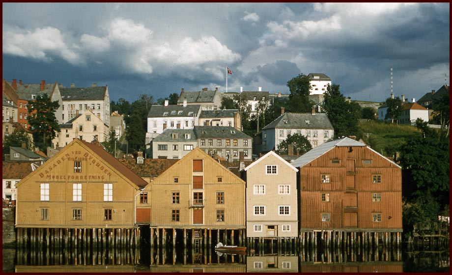

Brubakken
Brubakken - Oppkalt i 1880 etter Gamle Bybro, som ligger ved foten av bakken. Den går østover fra brua, bratt oppover til platået på Pappenheim, hvor den fortsetter som Kristianstensbakken. Det er mulig at Kristianstensbakken opprinnelig har har vært navnet på hele bakken. Senere ble Steinsbakken det vanlige navnet på på folkemunne, mens Brubakken ble det offisielle navnet. (Kilde: Trondheim Byarkiv)
This site is about Bakklandet in Trondheim, Norway. All text in norwegian, but pictures are in english.
Brubakken (Foto: EspeN-ikon ©)
Brubakken (Fotograf ukjent, årstall ukjent) (Kilde: Trondheim Byarkiv)

Brubakken (Fotograf: Henning Meyer, årstall: "etter 1979") (Kilde: Trondheim Byarkiv)
Brubakken 2
Brubakken 2b ligger tilbaketrukket fra veien, tett opp mot Krangata 2. Brubakken 2(a) er lekeplassen som grenser mot veien. November 2012(Foto: EspeN-ikon ©)
Brubakken 4
Brubakken 4, November 2012(Foto: EspeN-ikon ©)
Brubakken 6
Brubakken 6, 26. November 2012. (Foto: EspeN-ikon ©)
Brubakken 8
Brubakken 8, November 2012. (Foto: EspeN-ikon ©)
På baksiden av Brubakken 8, er det synlige beviset på motorveiplanene. (Foto: EspeN-ikon ©)
Motorveiplanen på 70 og 80-tallet var nær ved å bli gjennomført. Det synlige bevistet på det, er vinkelen på endeveggen i Brubakken 8 (Den røde bygningen). Her ble det lagt føringer fra kommunen på utformingen av veggen, fordi veien skulle passere tett opp til dette huset.
Brubakken 10
Brubakken 10, November 2012. (Foto: EspeN-ikon ©)
Skrenten 21
Skrenten 21, November 2012. (Foto: EspeN-ikon ©)
I dette huset bodde Marie Wexelsen en periode på slutten av 1800-tallet, starten på 1900-tallet. Hun er mest kjent for å ha skrevet teksten til "Jeg er så glad hver julekveld", men har også gitt ut barnebøker, og skevet mange vers og rim. Marie Wexelsens gravsted er på Tilfredshet Kirkegård i Trondheim, hvor første vers av "Jeg er så glad hver julekveld" er en del av inskripsjonen på gravsteinen. (Takk til Kirsti Merete Arnesen og Liv Ingebrigtsen Skjervold for opplysningene)
Marie W på Wikipedia
Skrenten 23
Skrenten 23, November 2012. (Foto: EspeN-ikon ©)

Bak bryggene ser vi skrenten, som den fremsto på 50-tallet. Bildet er trolig tatt siste halvdel av 50-tallet. Fra Byantikvarens lysbildesamling. (Foto: Ukjent ©)
Kilde: Trondheim Byarkiv
Skrenten 25
Skrenten 25, November 2012. (Foto: EspeN-ikon ©)
TRAMPE